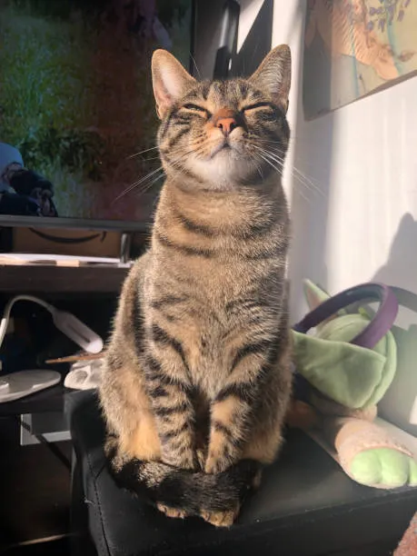
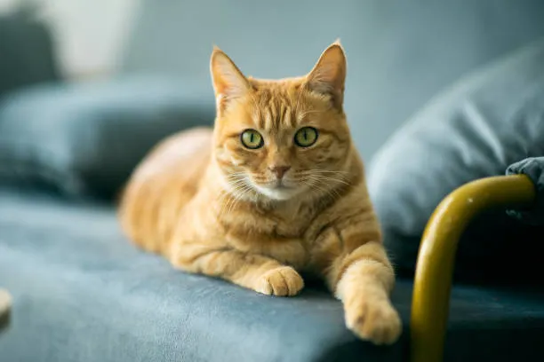

These are the requirements for this assignment
- title tag
- h1 - main heading
- p - two paragraphs each with a minimum of four sentences
- 2 images
- 1 list of either type
- 1 table
- 2 external links

May I direct your attention to the above image? This is an image of a very very cute cat that I think is very cute. This cat image is from gettyimages.com and is a stock image. This image is a tabby cat.

Hear ye, Hear ye! Pray, cast thy eyes upon this likeness above. Indeed, thine eyes doth not yet decieve thee. This doth be a photograph of a feline creature. Aye, 'tis quite the exquisite creature is it not? I hath been informed that thine above creature shall henceforth be named the Ginger Cat. I hath been informed of this by gettyimages.com.
Contained within the table below is the cuteness and overall rating of a few cats
| Cat Breed | Cuteness | Overall |
|---|---|---|
| Tabby Cat | 10/10 | 100 ovr |
| Sphynx Cat | 5/10 | 68 ovr |
| British Shorthair Cat | 20/10 | 200 ovr |
| Ginger Cat | orange/10 | orange ovr |